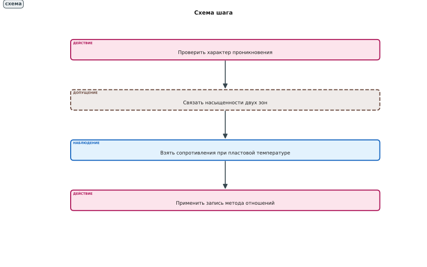

Стр. 127 · Ratio Method
To determine water saturation by the ratio method
Log InterpretationШаг 14 из 66
В книге: «Ratio Method» стр. 126–128
Опирается на: шаг 12 «Как обойтись без кривой пористости» (предпосылка), шаг 10 «Как оценить воду у ствола» (предпосылка)
Метод отношений оценивает долю воды вдали от ствола, используя модель промытой зоны.
Обязательно проверьте, в каких условиях автор применяет это приближение.
Пороговая идея. Оценка незатронутой зоны зависит от допущения о промытой зоне. модель
Для оценки воды нужна водонасыщенность промытой зоны у ствола. Остаточная насыщенность углеводородами — доля пор, занятая углеводородами после вытеснения. Автор считает приближение обычно пригодным при умеренном проникновении и средней остаточной насыщенности. стр. 128
«$(S_{wr})$, you must know the flushed zone's water saturation.»
«In the flushed zone of formations with moderate invasion and average residual hydrocarbon saturation, the following relationship normally works well:»
Автор описывает подстановку зависимости для промытой зоны в формулу индекса. В итоговой напечатанной записи нормированное отношение сопротивлений возводится в степень «пять восьмых». стр. 128
«Substituting Equation 7.5 in Equation 7.4 and solving for $S_w$, the ratio method water saturation ($S_{wr}$) is:»
Сопротивление промытой зоны получают мелким каротажем, чувствительным к породе у ствола. Сопротивление фильтрата и сопротивление пластовой воды берут при температуре пласта. стр. 128
«$R_{xo}$ = shallow resistivity from measurements such as laterolog-8, microspherically focused log, or microlaterolog»
«$R_{mf}$ = resistivity of mud filtrate at formation temperature»
«$R_w$ = resistivity of formation water at formation temperature»

Приведённая промежуточная зависимость не даёт заявленную итоговую степень при подстановке. Не переносите эту запись в программу без сверки оригинала. пояснение модели
Что сделать
Напечатанная зависимость для промытой зоны стр. 128
| Обозначение | Что это | Единицы |
|---|---|---|
| $S_{xo}$ | водонасыщенность промытой зоны | — |
| $S_w$ | водонасыщенность незатронутой зоны | — |
Напечатанная оценка методом отношений стр. 128
| Обозначение | Что это | Единицы |
|---|---|---|
| $S_{wr}$ | оценка водонасыщенности незатронутой зоны методом отношений | — |
| $R_{xo}$ | сопротивление промытой зоны по мелким измерениям | — |
| $R_t$ | истинное сопротивление пласта | — |
| $R_{mf}$ | сопротивление фильтрата при пластовой температуре | — |
| $R_w$ | сопротивление пластовой воды при пластовой температуре | — |
Та же оценка в десятичной записи стр. 128
| Обозначение | Что это | Единицы |
|---|---|---|
| $S_{wr}$ | оценка водонасыщенности незатронутой зоны методом отношений | — |
| $R_{xo}$ | сопротивление промытой зоны по мелким измерениям | — |
| $R_t$ | истинное сопротивление пласта | — |
| $R_{mf}$ | сопротивление фильтрата при пластовой температуре | — |
| $R_w$ | сопротивление пластовой воды при пластовой температуре | — |
Сопротивления двух зон, воды и фильтрата плюс допущение о профиле проникновения → Оценка водонасыщенности незатронутой зоны.
Восстановить отсутствующую переменную приближением и явно назвать его предпосылку.
Где аналогия перестаёт работать: Проникновение — физический процесс; данные не всегда позволяют независимо проверить приближение.
Печатная степень для промежуточной зависимости и заявленная подстановка не согласуются с итоговой степенью; подпись Sᵥᵣ в перечне переменных тоже расходится с вводным абзацем. Обе формы сохранены как в предоставленном тексте, без самостоятельной замены.
Верный ответ: Умеренное проникновение; Средняя остаточная насыщенность углеводородами
Автор оговаривает степень проникновения и остаточное насыщение. Где это в тексте (стр. 128) →
В каком порядке применяют приближение и расчёт?
Перетащите пункты (мышью или пальцем за ⠿) или двигайте кнопками ↑ ↓.
Верный ответ: Проверить характер проникновения и остаточную насыщенность → Выбрать зависимость для промытой зоны → Подставить её в формулу отношения
Подстановку делают после проверки условий модели. Где это в тексте (стр. 128) →
Все утверждения шага с дословной цитатой автора и страницей книги (по PDF).
Чтобы оценить водонасыщенность методом отношений, нужно знать водонасыщенность промытой зоны. наблюдение
«$(S_{wr})$, you must know the flushed zone's water saturation.»
Отношение обычно применимо при умеренном проникновении и средней остаточной насыщенности углеводородами. допущение
«In the flushed zone of formations with moderate invasion and average residual hydrocarbon saturation, the following relationship normally works well:»
Автор описывает получение оценки подстановкой зависимости для промытой зоны в формулу индекса. наблюдение
«Substituting Equation 7.5 in Equation 7.4 and solving for $S_w$, the ratio method water saturation ($S_{wr}$) is:»
Одно из входных сопротивлений получают мелким каротажем. наблюдение
«$R_{xo}$ = shallow resistivity from measurements such as laterolog-8, microspherically focused log, or microlaterolog»
Сопротивление фильтрата приводят к пластовой температуре. наблюдение
«$R_{mf}$ = resistivity of mud filtrate at formation temperature»
Сопротивление пластовой воды приводят к пластовой температуре. наблюдение
«$R_w$ = resistivity of formation water at formation temperature»
Стр. 127 · Ratio Method
To determine water saturation by the ratio method
Стр. 128 · Ratio Method
$(S_{wr})$, you must know the flushed zone's water saturation. In the flushed zone of formations with moderate invasion and average residual hydrocarbon saturation, the following relationship normally works well:
Стр. 128 · Ratio Method
$$S_{xo} = (S_w)^{\frac{1}{2}} \tag{7.5}$$
Стр. 128 · Ratio Method
where:
Стр. 128 · Ratio Method
$S_{xo}$ = water saturation of the flushed zone
Стр. 128 · Ratio Method
$S_w$ = water saturation of the uninvaded zone
Стр. 128 · Ratio Method
Substituting Equation 7.5 in Equation 7.4 and solving for $S_w$, the ratio method water saturation ($S_{wr}$) is:
Стр. 128 · Ratio Method
$$S_{wr} = \left( \frac{R_{xo} / R_t}{R_{mf} / R_w} \right)^{\frac{5}{8}} \tag{7.6}$$
Стр. 128 · Ratio Method
or:
Стр. 128 · Ratio Method
$$S_{wr} = \left( \frac{R_{xo} / R_t}{R_{mf} / R_w} \right)^{0.625} \tag{7.7}$$
Стр. 128 · Ratio Method
where:
Стр. 128 · Ratio Method
$S_{wr}$ = moveable hydrocarbon index
Стр. 128 · Ratio Method
$R_{xo}$ = shallow resistivity from measurements such as laterolog-8, microspherically focused log, or microlaterolog
Стр. 128 · Ratio Method
$R_t$ = true formation resistivity (i.e., deep induction or deep laterolog corrected for invasion)
Стр. 128 · Ratio Method
$R_{mf}$ = resistivity of mud filtrate at formation temperature
Стр. 128 · Ratio Method
$R_w$ = resistivity of formation water at formation temperature
На этот шаг опираются: шаг 15 «Что значит совпадение двух оценок».
Как оценить воду по отношениям
Ссылки в ответе ведут к исходному тексту.